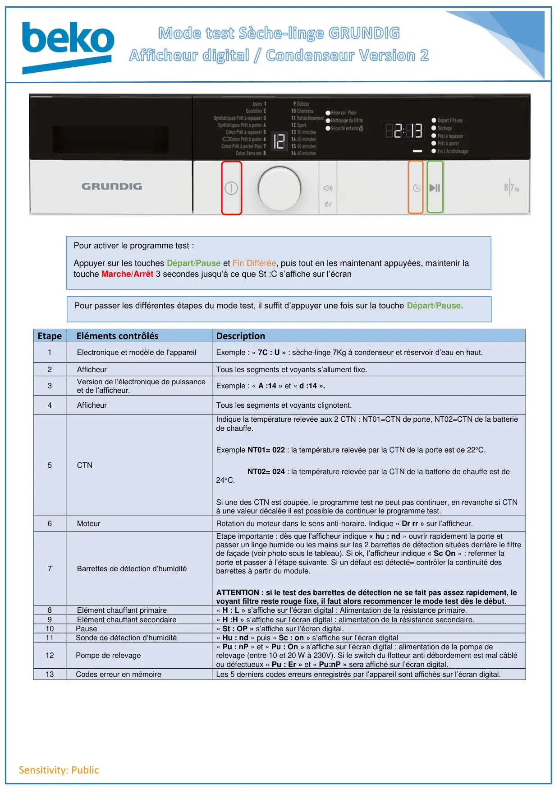
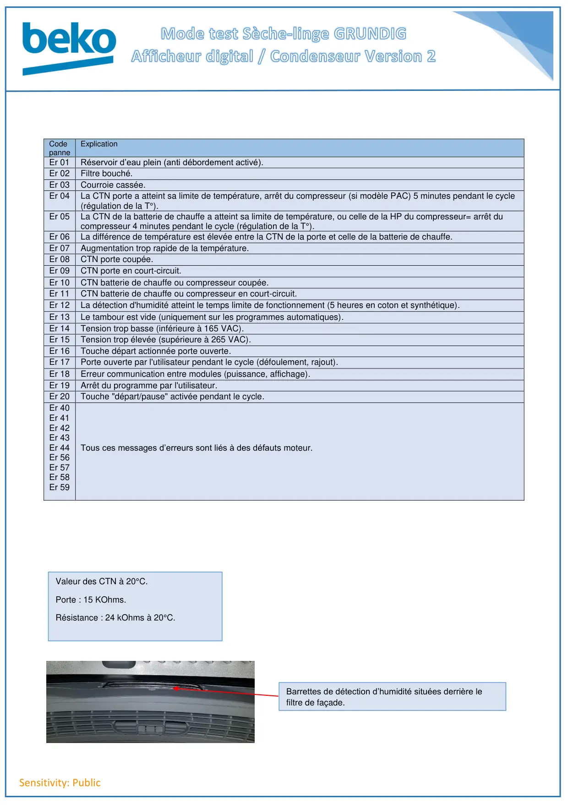

Prog Test seche linge Gundig Afficheur Condenseur Version 2

Sensitivity: PublicEtape Eléments contrôlésDescription1Electronique et modèle de l’appareilExemple : « 7C : U » : sèche-linge 7Kg à condenseur et réservoir d’eau en haut.2AfficheurTous les segments et voyants s’allument fixe.3Version de l’électronique de puissanceet de l’afficheur.Exemple : « A :14 » et « d :14 ».4AfficheurTous les segments et voyants clignotent.5CTNIndique la température relevée aux 2 CTN : NT01=CTN de porte, NT02=CTN de la batteriede chauffe.Exemple NT01= 022 : la température relevée par la CTN de la porte est de 22°C.NT02= 024 : la température relevée par la CTN de la batterie de chauffe est de24°C.Si une des CTN est coupée, le programme test ne peut pas continuer, en revanche si CTNà une valeur décalée il est possible de continuer le programme test.6MoteurRotation du moteur dans le sens anti-horaire. Indique « Dr rr » sur l’afficheur.7Barrettes de détection d’humiditéEtape importante : dès que l’afficheur indique « hu : nd » ouvrir rapidement la porte etpasser un linge humide ou les mains sur les 2 barrettes de détection situées derrière le filtrede façade (voir photo sous le tableau). Si ok, l’afficheur indique « Sc On » : refermer laporte et passer à l’étape suivante. Si un défaut est détecté= contrôler la continuité desbarrettes à partir du module.ATTENTION : si le test des barrettes de détection ne se fait pas assez rapidement, levoyant filtre reste rouge fixe, il faut alors recommencer le mode test dès le début.8Elément chauffant primaire« H : L » s’affiche sur l’écran digital : Alimentation de la résistance primaire.9Elément chauffant secondaire« H :H » s’affiche sur l’écran digital : alimentation de la résistance secondaire.10Pause« St : OP » s’affiche sur l’écran digital.11Sonde de détection d’humidité« Hu : nd » puis « Sc : on » s’affiche sur l’écran digital12Pompe de relevage« Pu : nP » et « Pu : On » s’affiche sur l’écran digital : alimentation de la pompe derelevage (entre 10 et 20 W à 230V). Si le switch du flotteur anti débordement est mal câbléou défectueux « Pu : Er » et « Pu:nP » sera affiché sur l’écran digital.13Codes erreur en mémoireLes 5 derniers codes erreurs enregistrés par l’appareil sont affichés sur l’écran digital.Pour passer les différentes étapes du mode test, il suffit d’appuyer une fois sur la touche Départ/Pause.Pour activer le programme test :Appuyer sur les touches Départ/Pause et Fin Différée, puis tout en les maintenant appuyées, maintenir latouche Marche/Arrêt 3 secondes jusqu’à ce que St :C s’affiche sur l’écran
1 / 2
Sensitivity: PublicCodepanneExplicationEr 01Réservoir d’eau plein (anti débordement activé).Er 02Filtre bouché.Er 03Courroie cassée.Er 04La CTN porte a atteint sa limite de température, arrêt du compresseur (si modèle PAC) 5 minutes pendant le cycle(régulation de la T°).Er 05La CTN de la batterie de chauffe a atteint sa limite de température, ou celle de la HP du compresseur= arrêt ducompresseur 4 minutes pendant le cycle (régulation de la T°).Er 06La différence de température est élevée entre la CTN de la porte et celle de la batterie de chauffe.Er 07Augmentation trop rapide de la température.Er 08CTN porte coupée.Er 09CTN porte en court-circuit.Er 10CTN batterie de chauffe ou compresseur coupée.Er 11CTN batterie de chauffe ou compresseur en court-circuit.Er 12La détection d'humidité atteint le temps limite de fonctionnement (5 heures en coton et synthétique).Er 13Le tambour est vide (uniquement sur les programmes automatiques).Er 14Tension trop basse (inférieure à 165 VAC).Er 15Tension trop élevée (supérieure à 265 VAC).Er 16Touche départ actionnée porte ouverte.Er 17Porte ouverte par l'utilisateur pendant le cycle (défoulement, rajout).Er 18Erreur communication entre modules (puissance, affichage).Er 19Arrêt du programme par l'utilisateur.Er 20Touche "départ/pause" activée pendant le cycle.Er 40Er 41Er 42Er 43Er 44Er 56Er 57Er 58Er 59Tous ces messages d’erreurs sont liés à des défauts moteur.Valeur des CTN à 20°C.Porte : 15 KOhms.Résistance : 24 kOhms à 20°C.Barrettes de détection d’humidité situées derrière lefiltre de façade.
2 / 2